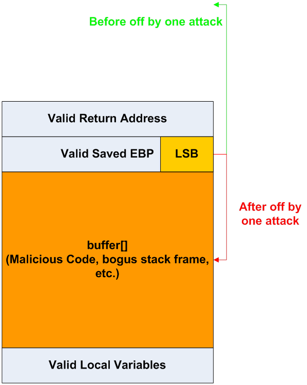
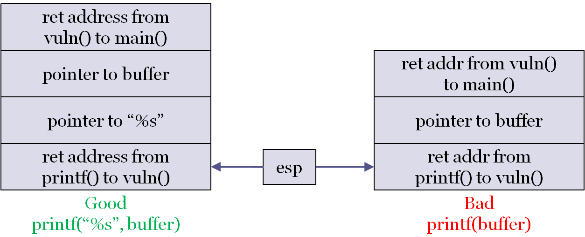
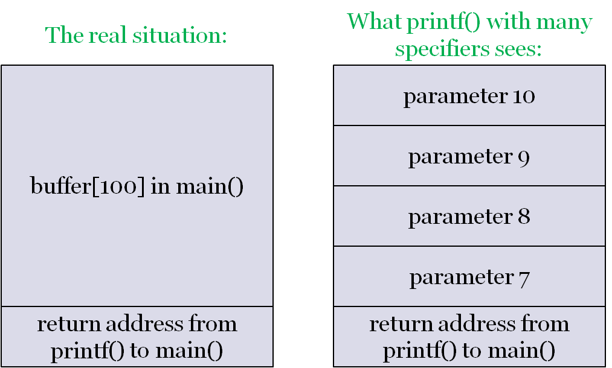
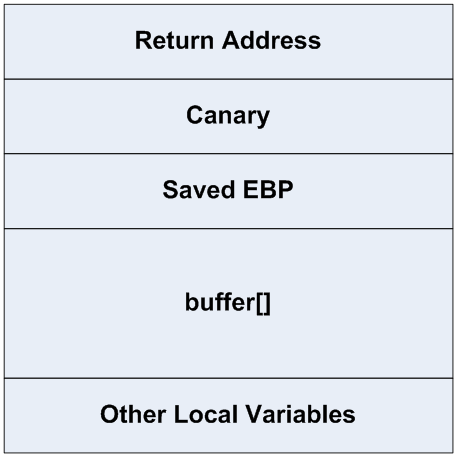

CS 3710
Introduction to Cybersecurity
Aaron Bloomfield (aaron@virginia.edu)
@github | ↑ | 
Binary Exploits
1st Generation Exploits
Vulnerabilities and Exploits
- Vulnerability is often used to refer only to vulnerable code in an OS or applications
- More generally, a vulnerability is whatever weakness in an overall system makes it open to attack
- An attack that was designed to target a known vulnerability is an exploit of that vulnerability
Varieties of Vulnerabilities
- Buffer overflow on stack
- Primarily used to overwrite the return address
- Buffer overflow on heap
- Return addresses are not on the heap
- Other pointers are on the heap and can be overwritten, e.g. function & file pointers
- Format string attacks
- Memory management attacks
- Failure to validate input
- URL encoding failures; … the list goes on
Classifying Vulnerabilities
- Szor classifies vulnerabilities and exploits by generation
- First generation: Stack buffer overflow
- Second generation:
- Off by one overflows, heap overflows, file pointer overwriting, function pointer overwriting
- Third generation
- Format string attacks, memory (heap) management attacks
- … the list is lengthy
First Generation Exploits
- Buffer overflow is the most common exploit
- Array bounds not usually checked at run time
- What comes after the buffer being overflowed determines what can be attacked
- The return address is on the stack at a known offset after the last local variable
- Return address can be changed to cause a return to malicious code
- Buffer overflows are easy to guard against, yet they remain the most common code vulnerability
Stack Buffer Overflows
- As we’ve seen them already, we aren’t going to go over them again here
2nd Generation Exploits
Heap Buffer Overflow
- Example: overwriting a file pointer
#include <stdio.h>
#include <stdlib.h>
#include <string.h>
int main(int argc, char **argv) {
int ch = 0, i = 0;
FILE *f = NULL;
static char buffer[16], *szFileName = "C:\\harmless.txt";
ch = getchar();
while (ch != EOF) { /* User input can overflow buffer[] */
buffer[i++] = ch; ch = getchar();
}
f = fopen(szFileName, "w+b"); /* might be modified! */
fputs(buffer, f);
fclose(f);
return 0;
}Heap Buffer Overflow
- Examine the key lines of the example code:
- Both variables are placed in global heap (because they are static) and will be consecutive in the heap
- When
buffer[]is overflowed with keyboard input, it will overwriteszFilename:
Heap Buffer Overflow
- An attacker who can compile the code and dump it to figure out addresses can now make
szFileNamepoint anywhere he wants - For example, he could make it point to
argv[1]; this means he can pass in a file name on the command line! - So, the attacker passes in
C:\autoexec.bator some other protected system file name on the command line; if this program is a system utility that runs with admin privileges, the system file can be overwritten
Off by One Attack
- The C language starts array indices at zero, which is not always intuitive for beginning programmers
- This often leads to off-by-one errors in code that fills a buffer
Off by One Attack
- How much damage could a one-byte exploit cause?
- It depends on what is after the buffer
- If it’s a stack canary, then there will be no effect
- If it’s the return address, then it can be a typical buffer overflow
- It could also be the saved EBP location between them (the frame pointer)
- The attacker cannot directly alter the return address in this case
- S/he can alter the last byte of the saved EBP
Off by One Attack
- When the vulnerable function returns, the calling function will now have a bogus stack frame
- This bogus stack frame can be arranged to lie within the buffer that was partly filled with malicious code
- When the caller of the vulnerable function returns, it will return into the start of the malicious code section of the buffer
Off by One Stack Frame
- The caller of the vulnerable function ends up returning to a fake return address (inside buffer):
- 512 bytes of
buffer[]received malicious code, plus a bogus stack frame, from the keyboard, as hex strings - Byte 513 from the keyboard was the new lowest byte of the valid saved EBP
- Lowest because the x86 is little-Endian
- Thus making the caller’s stack frame be inside
buffer[]
- 512 bytes of
Off by One Stack Frame

Off by One: Real Examples
Function Pointer Overwriting
- A system utility could have a function pointer to a callback function, declared after a buffer (Szor, Listing 10.5)
- Overflowing the buffer overwrites the function pointer
- By determining the address of system() on this machine, an attacker can cause system() to be called instead of the callback function
- Macromedia Flash example
3rd Generation Exploits
Format String Attacks
- Many C library functions produce formatted output using format strings
- e.g.
printf(),fprintf(),wprintf(),sprintf(), etc.)
- e.g.
- These functions permit strings that have no format control to be printed (unfortunately):
Format String Attacks
- Consider:
- The format string (1st parameter to
printf()) is not a fixed string - This non-standard approach creates the possibility that an attacker will pass a format string rather than a string to print, which can be used to write to memory
Format String Attack Example
void vuln(char buffer[256]) {
printf(buffer);
/* Bad; good would be: printf("%s",buffer) */
}
int main(int argc, char *argv[]) {
char buffer[256] = ""; /* allocate buffer */
if (2 == argc) /* copy command line */
strncpy(buffer, argv[1], 255);
vuln(buffer);
return 0;
}- The included Makefile compiles this to
vuln-32bit.exeandvuln-64bit.exe - What if the user passes
%xon the command line?
Format String Attack Example
- For sanity sake, we will probably want to run it via:
- This isn’t necessary, but it will make our lives easier
- Since the addresses will be the same each time we run it
Format String Attack Example
- If the user passes
%xon the command line, then printf() will receive a pointer to a string with"%x"in it on the stack printf()will see the%xand assume there is another parameter above it on the stack- Whatever is above it on the stack will be printed in hexadecimal
- Difference between correct and incorrect uses of
printf()is seen in next diagram
Example: Uses of printf()
- Immediately after the call to
printf(), but before the prologue code inprintf():

- This is the 32-bit version
Example: Uses of printf()
- For the 64-bit version:
- The return addresses are still on the stack
- 0x4005f3 from
printf()tovuln() - 0x40067c from
vuln()tomain()
- 0x4005f3 from
- The parameters are in registers (rdi for the first, rsi for the second, etc.)
- The return addresses are still on the stack
- Note that, in both cases, there may be other values between the stack values shown
What can we do with this?
- If we provide
%x%x%x%x%x%x%x%x, it will print the values on the stack- For 8-byte values, try using
%lxinstead of%x
- For 8-byte values, try using
- Keep in mind that the first 5 will print the register contents!
- Wait – why only the first 5?
Faking printf() parameters

Overwriting Within the Stack
- The format string can also be used to force
printf()to write to memory via%n:
- This prints “foobar” and then writes 6 to
nBytesWritten - We can also use
%hnfor a short, or%lnfor a long - Now we can start writing to memory, rather than just reading it…
Writing to the stack
- If we want to write a specific value, such as a pointer address, we just have to write that many bytes to stdout
- There are shortcuts to this: use a specifier such as
%.4196006u
- There are shortcuts to this: use a specifier such as
- Note that values in the buffer are both the parameters AND the values read into them
- Thus, we can supply the address to write to
The stack diagram again
A vulnerability
Consider the exploitable.c (html) code:
int exploited() {
printf("Got here!\n");
exit(0);
}
int main(void) {
char buffer[100];
while (fgets(buffer, sizeof buffer, stdin)) {
printf(buffer);
}
return 0;
}- We can supply a string such that
exploited()will be called, but we won’t see that here- Interested in the details? Take Defense Against the Dark Arts, or see the slide set here
Heap Management
- A heap allocation (e.g. via
malloc()) allocates a small control block, with pointer and size fields, just before the memory that is allocated - An attacker can underflow the heap memory allocated (in the absence of proper bounds checking, or with pointer arithmetic) and overwrite the control block
- The heap management software will now use the overwritten memory pointer info in the control block, and can thus be redirected to write to arbitrary memory addresses
Input Validation Failures
- There are numerous ways in which an application program can fail to validate user input
- We will examine the two failures that are most important in the Internet age:
- URL encoding and canonicalization
- http://domain.tld/passwords.txt is not allowed by the webserver, but http://domain.tld/user/../passwords.txt may bypass naive security checks
- URL encoding and canonicalization
Input Validation Failures
- There are numerous ways in which an application program can fail to validate user input
- We will examine the two failures that are most important in the Internet age:
- MIME header parsing
- Exploit: Make an attachment of MIME type audio/x-wav but make the file name be virus.exe.
- This was a bug in IE back in 2001 which allowed W32/Badtrans and W32/Klez could exploit it.
- MIME header parsing
Miscellaneous Vulnerabilities
Miscellaneous Vulnerabilities
- Mistakes by system administrators, users, bad default security levels in applications software or firewalls, etc., can all create vulnerabilities
- Most exploits (including all 3 generations) are referred to as blended attacks
- Because there is always a mixture of an exploit and a particular type of malicious code
- e.g. overflowing a buffer is an exploit, but depositing a virus and running it is the second stage of the blended attack
- We will review some non source code examples
System Administration Vulnerabilities
- Failure to provide secure utilities
- e.g. SSL/SSH remote login utilities were not commonly used a decade ago
- Loose file system access rights and user privilege levels
- many users have no idea that everyone can read many of their files
- or the 4th octal digit of chmod permissions
System Administration Vulnerabilities
- Errors in firewall configuration (Szor, sec. 14.3)
- Allows attackers unauthorized access
- Permits denial of service attacks to continue instead of excluding the flood of packets
User Behavior Vulnerabilities
- Poor password selection
- Too short; all alphabetic; common words
- 1988 Morris worm used a list of only 432 common passwords, and succeeded in cracking many user accounts all over the internet
- This was the main reason the worm spread more than the creator thought it would; he did not realize that password selection was that bad!
- Opening executable email attachments
Vulnerabilities: Do We Ever Learn?
- All of these vulnerabilities have been known for years – buffer overflows for over 40 years!
- Yet, the number of exploits is increasing
- 323 buffer overflow vulnerabilities reported in 2004 to the national cyber-security vulnerability database (http://nvd.nist.gov/)
- 331 buffer overflow vulnerabilities reported in just the first 6 months of 2005!
- They don’t bother to keep track anymore…
Avoiding Vulnerabilities
- Good password selection
- Many newer systems even allow pass phrases, i.e. multiple words with punctuation or blanks between
- System should try its own dictionary attack and not permit you to choose a password that can be defeated
- Don’t store a password unencrypted anywhere in a system, even in a temporary variable in a program
Avoiding Vulnerabilities
- Don’t open executable email attachments
- Review access permissions throughout your file directory structure
- Display and review your firewall settings
Defenses
Compiler-Based Prevention
- One approach: Modify the C language itself with a new compiler and runtime library, as in the Cyclone variant of C
- Overhead for bounds checking, garbage collection, library safeguards, etc., ranges from negligible to >100% for the worst cases
- Another approach: leave the language alone, but modify the compiler to emit stack and/or buffer overflow safeguards in the executable
- Examples we will see: StackGuard, ProPolice, and StackShield
StackGuard: Stack Canaries
- StackGuard inserts a marker in between the frame pointer and the return address on the stack
- Marker is called a
canary, as in the “canary in a coal mine”
- Marker is called a
- If a buffer overflow overwrites the stack all the way to the return address, it will also overwrite the canary
- Before returning, the canary is examined for modification
Stack Canary Operation

- Overflowing
buffer[]tramples on canary - Does not prevent trashing the EBP (or RBP), local function or file pointers, etc.
- Canary value: NUL-CR-LF-EOF; very difficult to write out from a string
ProPolice: Better Stack Canaries and Frame Layout
- ProPolice (a.k.a. SSP, Stack-Smashing Protector) from IBM makes a couple of major improvements to StackGuard
- Canary is placed below the saved EBP to protect it
- The stack frame layout is rearranged so that non-array locals, such as function pointers and file pointers, are placed below arrays, so that overflowing the arrays cannot reach the pointers
Stack Canary Limitations
- Stack canaries only guard against a direct attack on the stack, e.g. overwriting a portion of the stack directly from its neighboring addresses
- We saw that a format string attack is indirect: it computes the location of the return address, then overwrites just that address and does not overflow from neighboring addresses
- Hence, it does not overwrite a canary
StackShield: Protecting Return Addresses
- StackShield is a Linux/gcc add-on that modifies the ASM output from gcc to maintain a separate data segment with return addresses
- Removing the return addresses from the data stack prevents both direct and indirect data attacks on the return address
StackShield: Protecting Return Addresses
- Also computes the range of valid code addresses and performs a range check on all function calls and returns
- A call to, or return into, a data area will be detected as invalid because of the address range
Operating System Defenses
- Don’t allow execution in the stack
- Exploit could still execute code from the heap or other global data area
- Instead of read and write permission bits on pages, add an execute permission bit and set it to false on all data pages (heap, stack, etc.)
- This is supported in hardware on the Intel x86-64 architecture and in the versions of Microsoft Windows (from XP onward) that run on it
Case Study: Slapper Worm
- The 2002 worm known as Linux/Slapper was a very complex attack on heap buffer overflow vulnerabilities within the Apache web server
- Vulnerability: In secure mode (i.e. on an https:// connection under SSL [Secure Socket Layer]), Apache copied the client’s master key into a fixed-length buffer
key_arg[]that was just big enough to hold a valid 8-byte key- But didn’t do any bounds checking, even though the key length is passed as a second parameter with the key
Case Study: Slapper Worm
- Exploit: Pass in a long key and key length, such that a certain magic address is overwritten
Slapper: The Magic Address
- The magic address that Slapper wanted to overwrite was the GOT (Global Offset Table) entry for the
free()function- GOT is the Unix/ELF equivalent of the IAT (Import Address Table) in a Windows PE file; Slapper is therefore an IAT modifying EPO worm
- I.e. If you redirect the GOT entry for free(), then calls into the C run-time library that should have gone into free() are now redirected to a new address
Slapper: The Magic Address
- The relative distance from the key_arg[] buffer to the GOT entry for
free()differs among Apache revisions and among different Linux revisions for which Apache was compiled - The Slapper author computed the addresses and distances across 23 (!) different combinations of Apache revision/Linux system
Slapper: The Magic Address
- The first client message the worm sends is a request for Apache to identify its revision number and the Linux system version code (a legitimate request, as Apache services can depend on these numbers)
- The exploit code was then tuned for the particular revision/system
- Ultimately, Slapper ran its own shellcode on the server system, with Apache privileges, when Apache executed a call to
free() - See Szor, 10.4.4, for lots more details